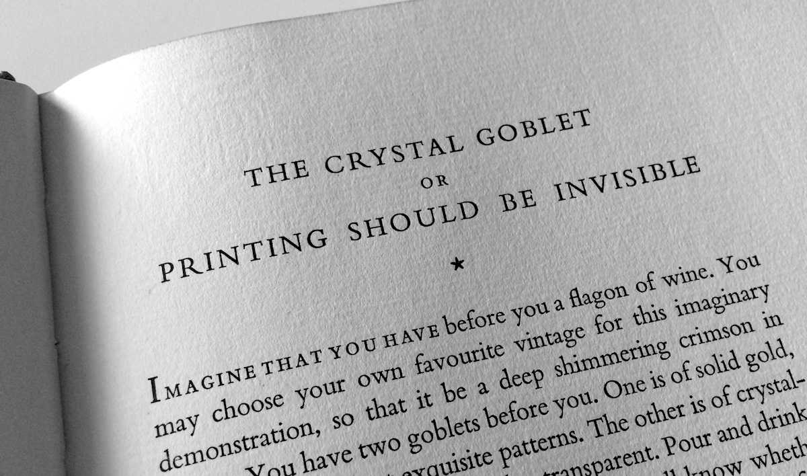

But it’s neither. It’s poorly reasoned, contradicts common sense, and like all faulty analogies, leads to faulty conclusions. Typography isn’t invisible. By embracing that fact rather than denying it, we can create better typography.
Warde proposes that on the printed page, the text is like a fine wine, and typography is the vessel that contains it. She argues that the ideal vessel for wine is one that shows rather than hides the wine’s virtues—the titular crystal goblet. According to Warde, ideal typography should likewise be invisible, letting the intrinsic virtues of the text show through.
An appealing metaphor, but totally inapt. As I said in what is typography?, typography is the visual component of the written word. But the converse is also true: without typography, a text has no visual characteristics. A goblet can be invisible because the wine is not. But text is already invisible, so typography cannot be. Rather than wine in a goblet, a more apt parallel might be helium in a balloon: the balloon gives shape and visibility to something that otherwise cannot be seen.
Ultimately, the flaw in the crystal-goblet metaphor is its reliance on the creaky, misleading idea that substance and presentation exist on separate layers. On that view, the highest calling of presentation is to get out of substance’s way.
But that’s never been true on the page (or screen). Why not? Because the written word is a fusion of text and typography, substance and presentation. In that regard, typography might be more like seasoning in a casserole: it doesn’t change the nutritional value, but it definitely makes the dish more flavorful and enjoyable.
But after 80 years of one terrible metaphor, let’s not adopt another. Let’s just pour concrete into the crystal goblet and toss it overboard, along with the banal idea of invisibility.
8 Feb 2016